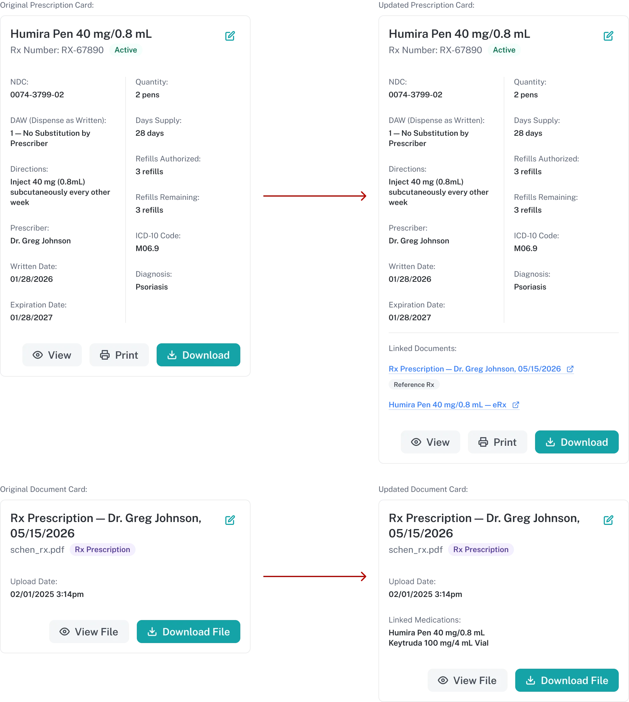
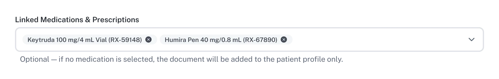
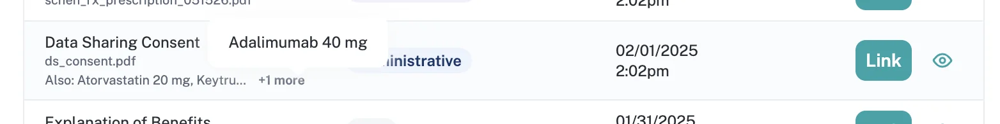
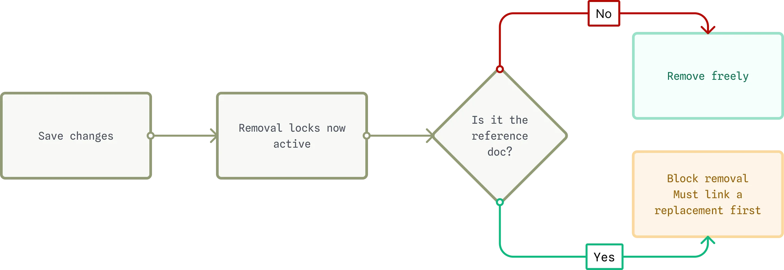

Case study
Linked Documents connects prescriptions and medications to the documents that support them, so staff can attach an incoming document to an existing patient record instead of restarting intake, and the system can resolve exactly which document prints when more than one could. I designed the interaction model and its guardrails.
Staff had no way to connect a document to a prescription across two separate views. During OnePulse Connect's dispensing workflow, staff work across a documents tab (authorization letters, EOBs, signed prescriptions, consent forms tied to a patient) and a prescription tab (prescription info and the patient's medication list, different objects with different data behind them), both inside the Global Inline Drawer. Staff had to reconcile the two by hand.

A doctor sending an ERX for a patient already set up in workflow left staff no way to attach it to the existing record, they had to restart intake from scratch. A single document, an authorization letter covering two dosage variants of the same drug, for example, sometimes needed to apply to more than one medication, and the system had no way to express that. We scoped the fix in a working session with the team on June 5, 2026.
Jillian, who works documents from the patient profile rather than an active workflow, described hunting for an approval letter after staff had already dispensed the medication, with no reliable way to find it by medication name. Staff were already renaming files "DO NOT USE" as a workaround, since there was no way to deactivate a document without deleting it.
Once staff could link a document to multiple medications, "Print Prescription" needed to resolve to exactly one document, even with several Rx Prescription-type documents on file. Leave it ambiguous, and the system either can't act or a staff member has to guess, in a clinical dispensing context. This tool couldn't leave that loose.
Checkboxes in a flat list were the first version, and they didn't work. Three potential users struggled with it in testing: the linking action wasn't explicit enough for people working under time pressure.
It had to work in both directions. From a prescription, a user opens Linked Documents and connects existing patient documents to it. From the documents side, uploading a new document lets a user tie it to one or more medications or prescriptions at upload time, in an optional Linked Medications & Prescriptions field. If nothing's selected, the document still uploads, it lands on the patient's profile only.

I fixed the visibility problem with a two-zone layout. The dialog splits into Linked to this Prescription (populated with whatever's already connected, or an explicit empty state) and All Documents (the full list, with a Link action per row). Clicking Link moves a document from one zone into the other.
I built this from existing components, on purpose. Table Row, Button, and Alert all came from the system as-is, no new components shipped for this. This kind of flow is a chance to either extend the system's surface area or confirm what's already there is enough. Later, I folded eRx records into the same model as their own document type, so I could link and replace a prescription received electronically the same way as one that arrived as a fax.
The system also needed a way to show when staff had already linked a document elsewhere. A patient's file could hold a document, an authorization letter, for instance, that applied to more than one medication. The shipped fix: a muted "Also Atorvastatin 20 mg" line under the filename, visible only when that link exists.

That idea came straight out of the original working session. I proposed it live in that first meeting, and the team responded to it. No existing design system pattern covered secondary metadata under a primary label that isn't a filename, so I flagged that gap rather than force an existing pattern to do something it wasn't built for.
The hardest problem in this feature was a guardrail: never let a prescription end up without a document backing it. Once "Print Prescription" depended on exactly one reference document, removing that document could leave a prescription with nothing behind it, a real risk in a system that dispenses medication. I designed the rule before it went through any formal review. Links stay editable before you save anything, since nothing is committed yet. Once you save, you can't remove the reference document outright, you have to designate a replacement first. Linking a new Rx-type document while one is already the reference surfaces a "Linked Prescriptions Found" alert, asking whether to replace it, add the new one alongside it, or cancel, and replacing the reference always requires capturing a reason first: new Rx, updated Rx, a strength change.
Anardo (Product Manager) and Maribel (Director of Clinical Pharmacy Innovation) reviewed that logic, and it held up without changes. Maribel's standard was direct: staff never delete patient records, and every prescription keeps a source document attached. The only legitimate reason to fully unlink is a patient-mismatch error, and staff handle that at the patient-record level, not in this dialog. Anardo confirmed the removal lock and the reason-capture requirement I'd already built matched that standard. Neither Maribel nor Anardo asked for a single change.

An AI assistant helped lay out candidate patterns for the reference-designation problem, weighed against what the design system already had. I chose a persistent row treatment and pushed it further: a left-stroke highlight and a "Reference Rx" tag on a filled star that doubles as the toggle, kept always visible so staff don't miss it in a fast-moving workflow.
"Associated Documents" and "+ Associate" tested as unclear across those same sessions, so I proposed "Linked Documents" and "Link," which matched the two-zone interaction more directly. "Primary Rx" got the same scrutiny: I flagged it early as a placeholder since "primary" implied a ranking, when the real function was identifying which document prints. I eventually settled on "Reference Rx." And when I dimmed already-linked documents in the All Documents list in my first version, the team's simpler read, remove the row once it's linked, was the right call, so I changed it.
I built and iterated this as a working HTML/CSS/JS prototype, directed through Claude Code rather than hand-coded. I wrote the specs, reviewed every change against the design, and made the calls on naming and edge cases. Claude Code wrote the markup and script changes to match.
Every prompt stayed scoped on purpose. Each one named what should change, down to specific class names and IDs, and closed with an explicit instruction not to touch anything else, a guardrail against letting an AI-assisted change drift outside its scope unnoticed, and a change log where every prompt maps to one reviewable diff. The Associated-to-Linked rename is the clearest example: it touched visible labels, CSS classes, JS function names, and data properties, and required spelling out which needed to change and which structural IDs had to stay put.
I was moving this into production, into the real OPC app, when I left the team. I don't have confirmation it reached a full release, and I'm not claiming that it did. I moved this past design and prototype into active implementation, on the strength of the decisions and spec discipline above, including a guardrail that Anardo and Maribel confirmed in review was already correct.
A few things were still open when I moved this into build:
I'd have kept iterating on all three with the same team that caught the guardrail edge cases early.